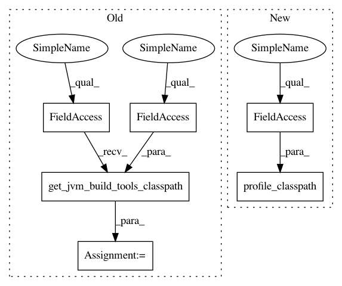

a5be64f57a268a23db5267cd7526d67c13a6bc66,src/python/twitter/pants/tasks/scala_repl.py,ScalaRepl,execute,#ScalaRepl#Any#,49
Before Change
def repl_workunit_factory(name, labels=list(), cmd=""):
return self.context.new_workunit(name=name, labels=[WorkUnit.REPL] + labels, cmd=cmd)
tools_classpath = self._bootstrap_utils.get_jvm_build_tools_classpath(self._bootstrap_tools)
kwargs = {
"jvmargs": self.jvm_args,
"classpath": self.classpath(tools_classpath, confs=self.confs,
exclusives_classpath=self.get_base_classpath_for_target(targets[0])),
After Change
kwargs = {
"jvmargs": self.jvm_args,
"classpath": self.classpath(profile_classpath(self.profile), confs=self.confs,
exclusives_classpath=self.get_base_classpath_for_target(targets[0])),
"main": self.main,
"args": self.args
In pattern: SUPERPATTERN
Frequency: 3
Non-data size: 6
Instances
Project Name: pantsbuild/pants
Commit Name: a5be64f57a268a23db5267cd7526d67c13a6bc66
Time: 2013-11-20
Author: jsirois@twitter.com
File Name: src/python/twitter/pants/tasks/scala_repl.py
Class Name: ScalaRepl
Method Name: execute
Project Name: pantsbuild/pants
Commit Name: a5be64f57a268a23db5267cd7526d67c13a6bc66
Time: 2013-11-20
Author: jsirois@twitter.com
File Name: src/python/twitter/pants/tasks/junit_run.py
Class Name: JUnitRun
Method Name: execute
Project Name: pantsbuild/pants
Commit Name: a5be64f57a268a23db5267cd7526d67c13a6bc66
Time: 2013-11-20
Author: jsirois@twitter.com
File Name: src/python/twitter/pants/tasks/benchmark_run.py
Class Name: BenchmarkRun
Method Name: execute